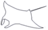

Doma

Projektujeme, rozpočtujeme, analyzujeme, vykonáváme inženýrskou činnost a technické poradenství pro stavebníka, autorsky dozorujeme stavby.
Vodovody
- • přivaděče
- • řady
- • vodojemy
- • přípojky
Rozpočty
- • s cenami
- • slepé
- • RTS
Analytika
- • topologie sítě
- • spotřeba vody
- • emisní limity
Stoky
- • kanály
- • čerpací stanice
- • čistírny ČOV
- • přípojky